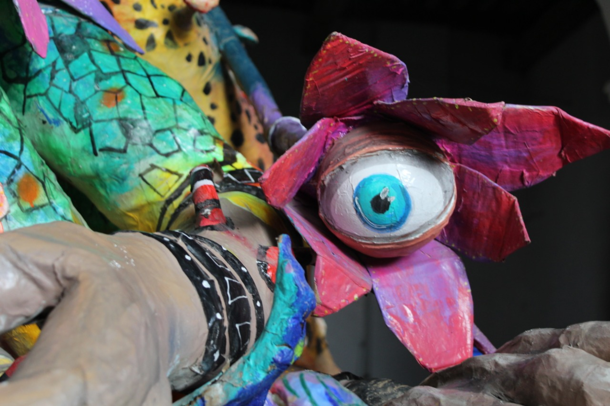

| K'ab | Proyecto // Fortalezas // Tema // Investigación // Referencias |
| Proyecto |
El principal medio de comunicación para el lenguaje de señas son las manos, por ello, el nombre del proyecto es "K'ab", que significa mano en maya. Además, en Mesoamérica, la mano estaba relacionada simbólicamente con la vida y la muerte y permitía a las personas reconocer su identidad distinguiéndose de los demás.
El equipo se conforma por: Stephanie A. Labra Ortiz Conoce su trabajo: Da click aquí 
Diego Alejandro Reyes Sánchez Conoce su trabajo: (Todavía no tengo un archivo o página con todos mis proyectos, sin embargo, en esta carpeta están algunos de ellos) Da click aquí
|
| Definición del tema |
|
| Referencias |
|
Altamirano, C. (2016). Los sordos son los discapacitados invisibles. 05 de junio del 2020, de EL PAÍS Sitio web: https://elpais.com/internacional/2016/09/30/mexico/1475226460_365921.html Mercader, F. et al.. (2018). Diccionario de Lengua de Señas Mexicana. 05 de junio del 2020, de Ciudad de México Sitio web: https://pdh.cdmx.gob.mx/storage/app/media/banner/Dic_LSM%202.pdf Escobar, L. (2015). LA LENGUA DE SEÑAS MEXICANA, ¿UNA LENGUA EN RIESGO? CONTACTO BIMODAL Y DOCUMENTACIÓN SOCIOLINGÜÍSTICA. 05 de junio 2020, de UNAM Sitio web: https://ela.enallt.unam.mx/index.php/ela/article/view/420/464 Anónimo. (2018). Lenguaje de señas. 05 de julio 2020, de EcuRed Sitio web: https://www.ecured.cu/Lenguaje_de_se%C3%B1as Consejo Nacional para el Desarrollo y la Inclusión de las Personas con Discapacidad. (2016). Lengua de Señas Mexicana (LSM). 06 de julio 2020, de Gobierno de México Sitio web: https://www.gob.mx/conadis/articulos/lengua-de-senas-mexicana-lsm?idiom=es |